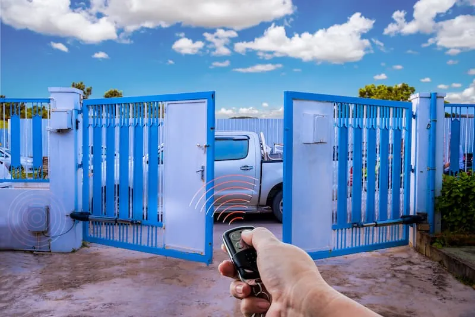
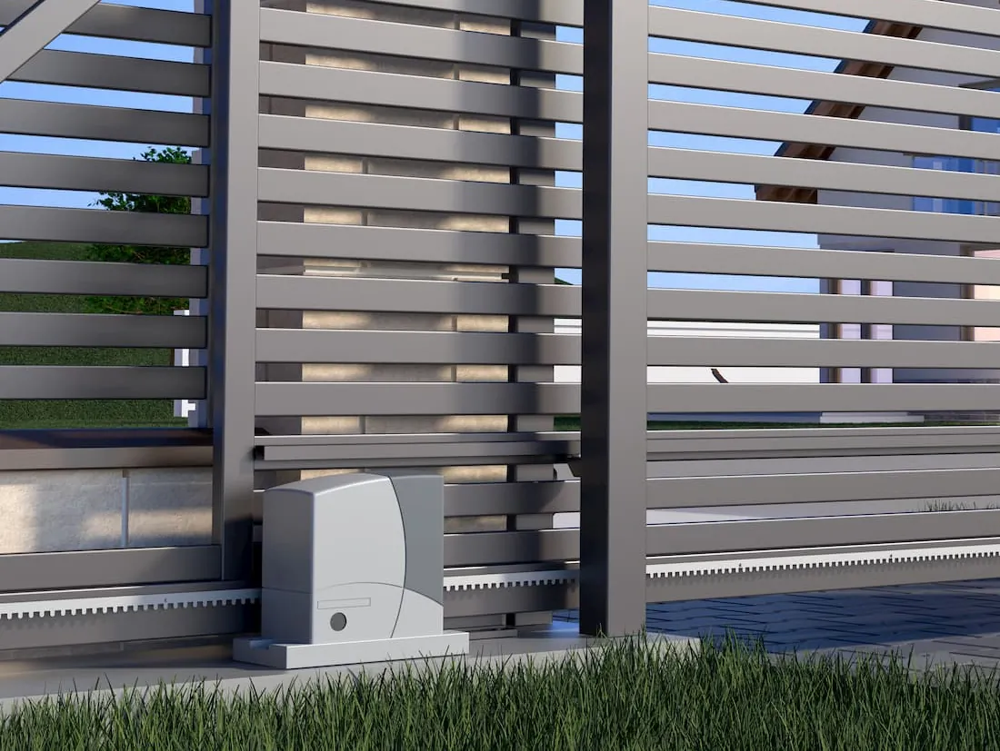
Automatyka bram
Napędy do bram przesuwnych i skrzydłowych, sterowane pilotem.
- napędy i piloty
- fotokomórki
- lampy ostrzegawcze
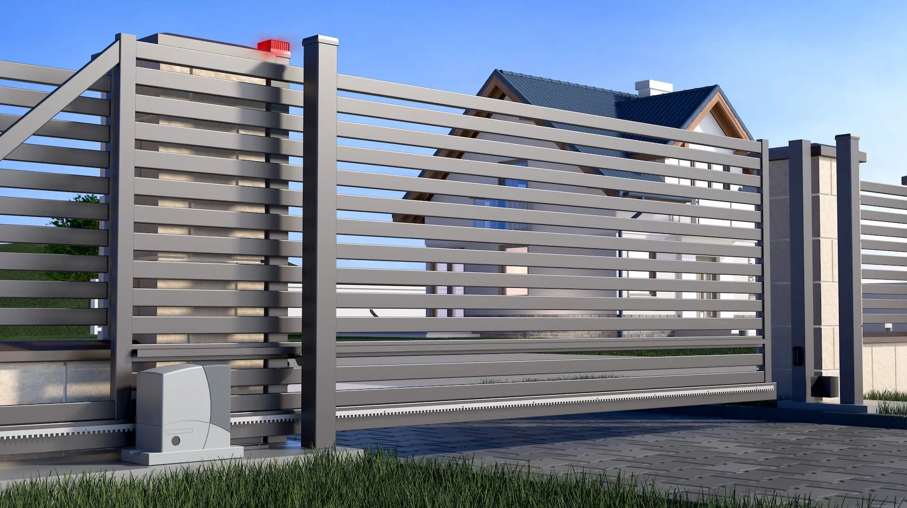
Automatyka bram, domofony, szlabany i kontrola dostępu dla domów, firm i wspólnot mieszkaniowych. Opole i okolice, od 2001 roku.
Autoryzowany partner CAME
Pięć rzeczy, które decydują o tym, kto i jak wchodzi na Państwa teren. Dobieramy sprzęt, montujemy i uruchamiamy całość.


Napędy do bram przesuwnych i skrzydłowych, sterowane pilotem.
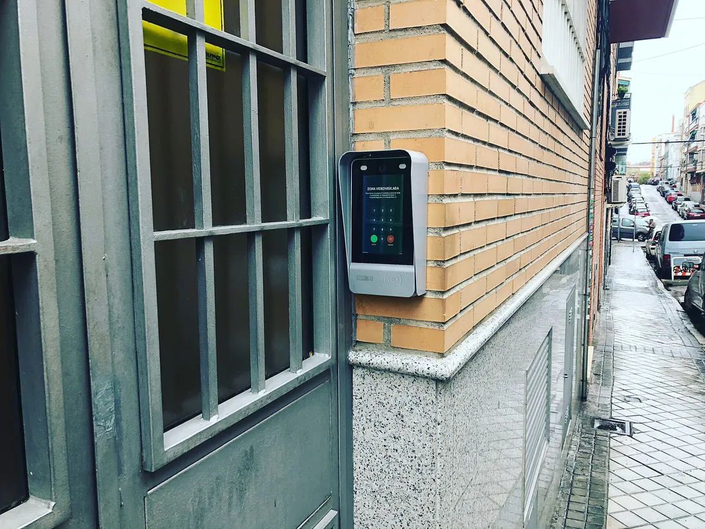
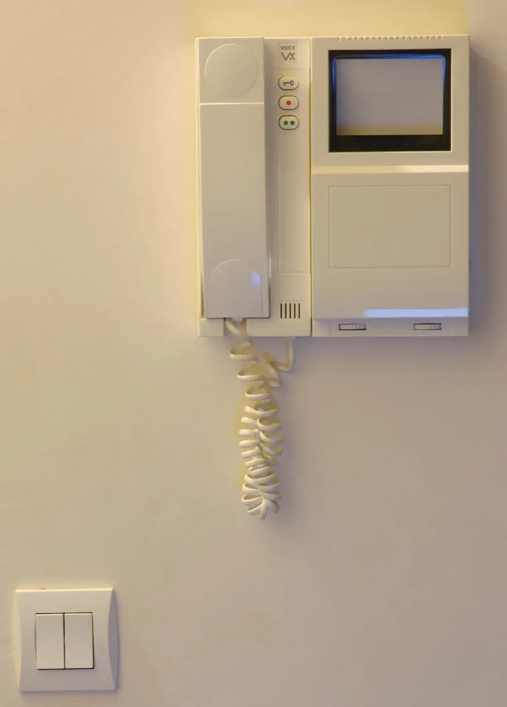
Panel przy furtce lub wejściu i monitor w domu albo w każdym mieszkaniu.
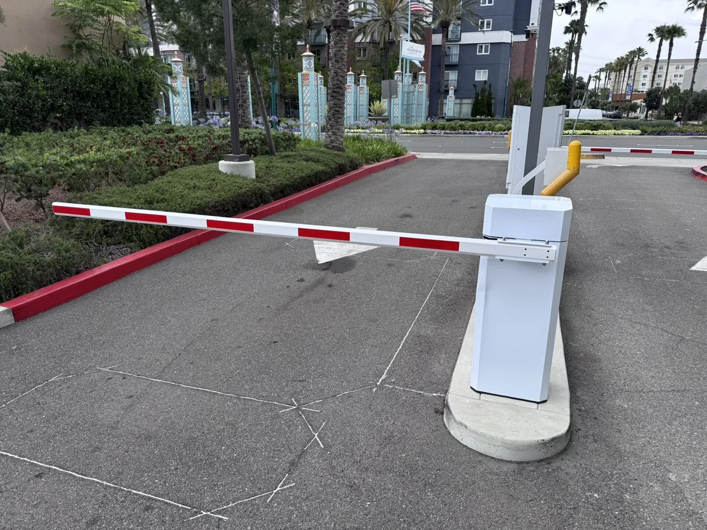
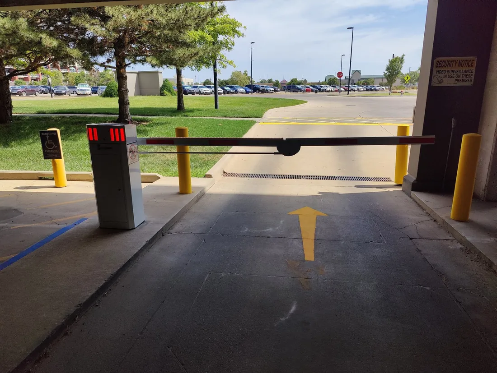
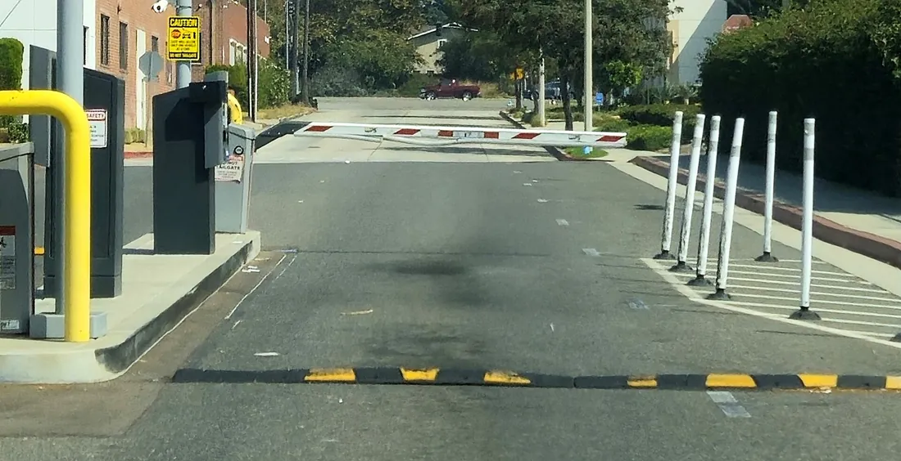
Wjazdy do firm, na osiedla i parkingi.
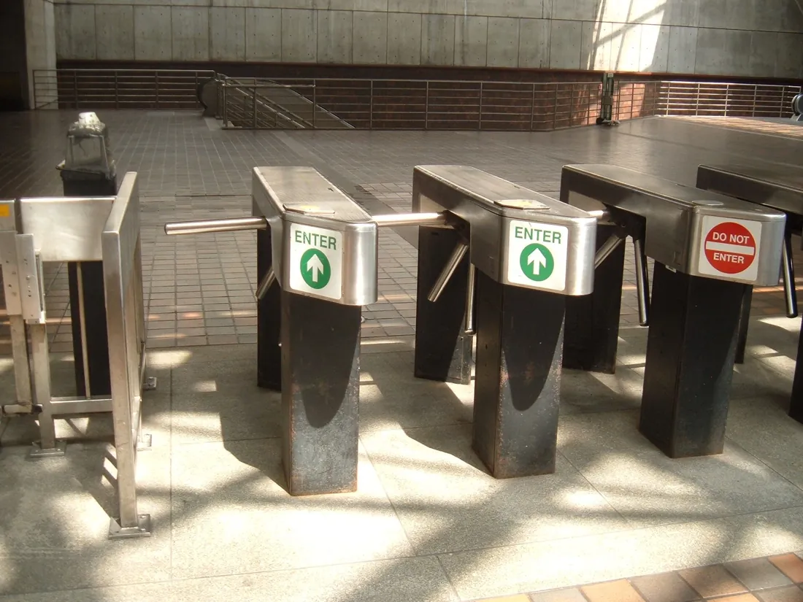
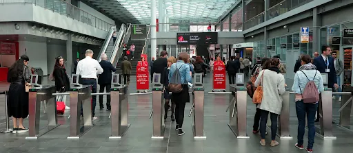
Czytniki, bramki i kołowrotki - wejście tylko dla uprawnionych.
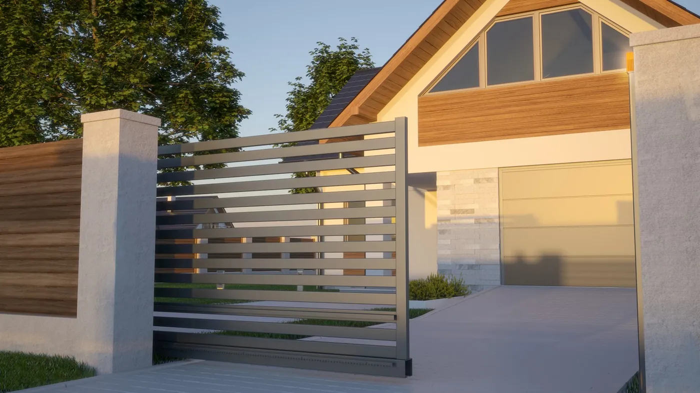
Brama, ogrodzenie i automatyka z jednej ręki.
EL-BRAM to firma Adriana Chudali ze Źlinic pod Opolem. Automatyką bram, domofonami, systemami parkingowymi i kontrolą dostępu zajmujemy się od początku działalności.
Przez te lata pracowaliśmy z wieloma dostawcami. Dziś montujemy sprzęt tylko tych, którzy sprawdzili się najlepiej - jesteśmy autoryzowanym partnerem firmy CAME.
Napisz, co chcesz zautomatyzować - bramę, furtkę, wjazd na parking czy wejście do budynku. Odpowiemy z propozycją.
502 650 057